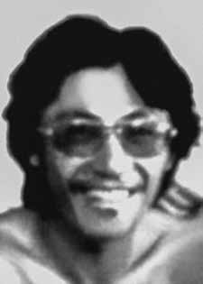

Hiroaki
Torigoe
CIRCUNSTÂNCIAS DA MORTE
Hiroaki Torigoe morreu aos 5 de janeiro de 1972, depois de ter sido atingido por um disparo de arma de fogo e preso por agentes do Destacamento de Operações de Informações – Centro de Operações de Defesa Interna de São Paulo (DOI-CODI/SP). Segundo documento do IML, o corpo de Hiroaki teria sido levado para o instituto no dia 5 de janeiro de 1971, por viaturas do DOI-CODI, e foi registrado com o nome de Massahiro Nakamura. Entretanto, há indícios de que os órgãos de informações e de segurança conheciam a verdadeira identidade de Hiroaki. Nas notícias publicadas pelos jornais, no dia posterior a sua morte, consta a informação de que sabiam que Massashiro Nakamura era o nome falso de Hiroaki Torigoe. No dia 15 de agosto de 1972, o delegado da Delegacia Estadual de Ordem Política e Social de São Paulo (DEOPS/SP), Alcides Cintra Bueno Filho, encaminhou a certidão de óbito de Hiroaki Torigoe a um juiz de Direito da Vara de Registro Públicos e afirmou que Hiroaki havia sido “sepultado com o nome de Massashiro Nakamura”. De acordo com documento enviado pelo diretor do Departamento de Polícia Federal ao chefe da Agência Central do Serviço Nacional de Informações, no dia 17 de março de 1974, Hiroaki teria sido “morto em 5/jan/72, em tiroteio travado com Órgãos de Segurança de São Paulo, quando portava identidade falsa com o nome de MASSAHIRO NAKAMURA”. O exame necroscópico do corpo de Hiroaki, realizado, no dia 6 de janeiro de 1972, pelos médicos-legistas Isaac Abramovitc e Abeylard Queiroz Orsini, registrou diversos ferimentos causados por arma de fogo, totalizando nove entradas de projéteis. Documento de presos políticos de São Paulo denunciando torturas e torturadores encaminhado ao presidente do Conselho Federal da Ordem dos Advogados do Brasil (OAB), em 1975, mais conhecido como Bagulhão, reafirma que Torigoe foi baleado, preso, torturado e assassinado. De acordo com Maria Eunice Paiva, relatora do caso de Hiroaki Torigoe na CEMDP, vários presos políticos, que estavam no DOI-CODI na ocasião da morte, viram Torigoe ser arrastado no pátio interno do órgão, sangrando abundantemente. Segundo os testemunhos mencionados pela relatora, por estar impossibilitado de ser pendurado no “pau de arara”, Hiroaki foi amarrado em uma cama de campanha onde foi torturado com espancamentos, choques elétricos e outras violências, até a sua morte. Em audiência da Comissão da Verdade Rubens Paiva da Assembleia Legislativa do Estado de São Paulo, realizada em 21 de fevereiro de 2013, para tratar do caso Edgar Aquino Duarte, o ex-preso político André Tsutomu Ota afirmou ter ouvido os gritos de Torigoe sendo torturado, e que soube que ele havia sido executado quando estava preso no DOI-CODI. Em outro depoimento prestado à Comissão Rubens Paiva, este em 17 de março de 2014, Suzana Keniger Lisbôa afirmou que “(a)s fotos do Hiroaki Torigoe morto são chocantes porque ele tem visivelmente um dos braços quebrados pela tortura”. No depoimento, denunciou que “à época, „o capitão do Exército Orestes, vulgo Ronaldo, capitão Amici, capitão Ubirajara – que hoje sabemos que se chama Aparecido Laertes Calandra –, o investigador de polícia Pedro Antônio Mira Granciere, o soldado da Aeronáutica Roberto, vulgo Padre, o policial apenas conhecido como Castilho. Todos chefiados pelo Carlos Alberto Brilhante Ustra e pelo então capitão Dalmo Lúcio Cyrillo foram os responsáveis direto pela tortura e assassinato de Hiroaki Torigoe. Em 2013, o Ministério Público Federal (MPF) instaurou a Ação Penal nº 0004823- 25.2013.4.03.6181, por ocultação de cadáver, contra Carlos Alberto Brilhante Ustra, coronel do Exército, e Alcides Singillo, delegado de Polícia Civil, na ocasião dos fatos que culminaram com o desaparecimento de Hiroaki. Em depoimento ao Ministério Público Federal de São Paulo (MPF-SP), 18 de abril de 2013, Francisco Carlos de Andrade, que estava preso no DOI-CODI no dia em que Hiroaki Torigoe foi levado para lá, recordou que “o agente Octávio Gonçalves Moreira Júnior chegou no destacamento gritando: Pegamos o Décio! Pegamos o Torigoe!”. Décio era o codinome usado por Torigoe na organização, esclareceu Francisco Carlos em seu depoimento. Nesse dia, declarou, estava preso em sua cela e não chegou a ver Torigoe, mas ouviu perfeitamente o diálogo travado entre Octávio e outros agentes que estavam no local. Octávio dizia que Torigoe estava ferido e que ele deveria ser levado para o hospital. Outros policiais, no entanto, diziam que Torigoe deveria ser interrogado mesmo estando ferido. Isso aconteceu à tarde, recordou Francisco Carlos. Os agentes que defendiam que Torigoe fosse interrogado diziam: “Não, vamos tirar dele o que pudermos”. Octávio retrucou: “Não, ele vai morrer, ele não vai aguentar”. Depois desse diálogo, não ouviu mais nada. Quando abriram a cela para levar o depoente, Francisco Carlos viu o corredor sujo de sangue, porém, só teve certeza de que Torigoe havia morrido quando já estava no presídio do Carandiru. Resta evidenciado, portanto, que a versão oficial é falsa, a despeito de que, ainda em 1993, era sustentada pelo Estado, conforme relatório do Ministério da Marinha encaminhado ao ministro da Justiça Maurício Corrêa: faleceu no dia 5 de janeiro de 1972, no pronto socorro para onde foi conduzido, após ser ferido em tiroteio com agentes de segurança, ao reagir à bala à voz de prisão. Usava o nome falso de Nakamura, o que dificultou sua verdadeira identificação. Torigoe já era procurado pelos órgãos de repressão; quando emboscado sabia-se que ele era o alvo e não outra pessoa aleatoriamente; não morreu em consequência de troca de tiros com o aparato repressivo, mas, sim, vítima de tortura seguida de morte; o laudo necroscópico procurou corroborar a versão oficial, no entanto, as próprias fotos denotam evidentes marcas de tortura. Os restos mortais de Hiroaki Torigoe foram enterrados no cemitério Dom Bosco, em Perus (SP), como se indigente fosse, registrado com o nome falso, nunca chegando a ser identificado. Diante da detenção, morte e ausência de identificação de seus restos mortais, a Comissão Nacional da Verdade entende que Hiroaki Torigoe permanece desaparecido.
Hiroaki Torigoe died on January 5, 1972, after being hit by a gunshot and arrested by agents from the Information Operations Detachment – São Paulo Internal Defense Operations Center (DOI-CODI/SP). According to an IML document, Hiroaki's body was taken to the institute on January 5, 1971, by DOI-CODI vehicles, and was registered under the name of Massahiro Nakamura. However, there are indications that intelligence and security agencies knew Hiroaki's true identity. In the news published by the newspapers, the day after his death, there is information that they knew that Massashiro Nakamura was the false name of Hiroaki Torigoe. On August 15, 1972, the delegate of the State Police for Political and Social Order of São Paulo (DEOPS/SP), Alcides Cintra Bueno Filho, forwarded Hiroaki Torigoe's death certificate to a judge at the Public Registry Court and stated that Hiroaki had been “buried under the name of Massashiro Nakamura”. According to a document sent by the director of the Federal Police Department to the head of the Central Agency of the National Information Service, on March 17, 1974, Hiroaki was “killed on January 5, 1972, in a shootout with São Paulo Security Bodies, when he was carrying a false identity card with the name of MASSAHIRO NAKAMURA”. The necroscopic examination of Hiroaki's body, carried out on January 6, 1972, by coroners Isaac Abramovitc and Abeylard Queiroz Orsini, recorded several injuries caused by firearms, totaling nine projectile entries. Document by political prisoners from São Paulo denouncing torture and torturers sent to the president of the Federal Council of the Brazilian Bar Association (OAB), in 1975, better known as Bagulhão, reaffirms that Torigoe was shot, arrested, tortured and murdered. According to Maria Eunice Paiva, rapporteur on Hiroaki Torigoe's case at CEMDP, several political prisoners, who were at DOI-CODI at the time of his death, saw Torigoe being dragged into the organ's internal courtyard, bleeding profusely. According to the testimonies mentioned by the rapporteur, as he was unable to be hung from the “pau de arara”, Hiroaki was tied to a camp bed where he was tortured with beatings, electric shocks and other violence, until his death. In a hearing of the Rubens Paiva Truth Commission of the Legislative Assembly of the State of São Paulo, held on February 21, 2013, to deal with the Edgar Aquino Duarte case, former political prisoner André Tsutomu Ota stated that he heard the screams of Torigoe being tortured, and that he knew that he had been executed when he was imprisoned at DOI-CODI. In another statement given to the Rubens Paiva Commission, this one on March 17, 2014, Suzana Keniger Lisbôa stated that “(the) photos of the dead Hiroaki Torigoe are shocking because he visibly has one of his arms broken by torture”. In his statement, he denounced that "at the time, "the Army captain Orestes, aka Ronaldo, captain Amici, captain Ubirajara – who today we know is called Aparecido Laertes Calandra –, the police investigator Pedro Antônio Mira Granciere, the Air Force soldier Roberto, aka Padre, the police officer known only as Castilho. All headed by Carlos Alberto Brilhante Ustra and the then captain Dalmo Lúcio Cyrillo were directly responsible for the torture and murder of Hiroaki Torigoe. In 2013, the Federal Public Ministry (MPF) opened Criminal Action No. 0004823- 25.2013.4.03.6181, for concealment of a corpse, against Carlos Alberto Brilhante Ustra, Army colonel, and Alcides Singillo, Civil Police delegate, at the time of the events that culminated in the disappearance of Hiroaki Torigoe. Hiroaki. In a statement to the Federal Public Ministry of São Paulo (MPF-SP), April 18, 2013, Francisco Carlos de Andrade, who was detained at DOI-CODI on the day Hiroaki Torigoe was taken there, recalled that “agent Octávio Gonçalves Moreira Júnior arrived at the detachment shouting: We got Décio! We got Torigoe!”. Décio was the codename used by Torigoe in the organization, Francisco Carlos clarified in his statement. On that day, he declared, he was imprisoned in his cell and did not see Torigoe, but he heard perfectly the dialogue between Octávio and other agents who were there. Octávio said that Torigoe was injured and that he should be taken to the hospital. Other police officers, however, said that Torigoe should be questioned even though he was injured. This happened in the afternoon, recalled Francisco Carlos. The agents who advocated that Torigoe be interrogated said: “No, we’re going to get what we can out of him.” Octávio replied: “No, he’s going to die, he won’t be able to bear it.” After this dialogue, he heard nothing more. When they opened the cell to take the deponent, Francisco Carlos saw the corridor stained with blood, however, he was only sure that Torigoe had died when he was already in the Carandiru prison. It remains clear, therefore, that the official version is false, despite the fact that, even in 1993, it was supported by the State, according to a report from the Ministry of the Navy sent to the Minister of Justice Maurício Corrêa: he died on January 5, 1972, in the emergency room where he was taken, after being injured in a shootout with security agents, when reacting to the bullet at the voice of arrest. He used the false name of Nakamura, which made his true identification difficult. Torigoe was already wanted by law enforcement agencies; when ambushed it was known that he was the target and not another random person; he did not die as a result of an exchange of fire with the repressive apparatus, but rather as a victim of torture followed by death; the autopsy report sought to corroborate the official version, however, the photos themselves show obvious marks of torture. Hiroaki Torigoe's mortal remains were buried in the Dom Bosco cemetery, in Perus (SP), as if he were indigent, registered under a false name, never being identified. Given the arrest, death and lack of identification of his remains, the National Truth Commission understands that Hiroaki Torigoe remains missing.
Hiroaki Torigoe murió el 5 de enero de 1972, tras ser alcanzado por un disparo y detenido por agentes del Destacamento de Operaciones de Información – Centro de Operaciones de Defensa Interna de São Paulo (DOI-CODI/SP). Según un documento del IML, el cuerpo de Hiroaki fue llevado al instituto el 5 de enero de 1971 en vehículos DOI-CODI, y fue registrado bajo el nombre de Massahiro Nakamura. Sin embargo, hay indicios de que las agencias de inteligencia y seguridad conocían la verdadera identidad de Hiroaki. En las noticias publicadas por los periódicos, al día siguiente de su muerte, hay información de que sabían que Massashiro Nakamura era el nombre falso de Hiroaki Torigoe. El 15 de agosto de 1972, el delegado de la Policía Estatal para el Orden Político y Social de São Paulo (DEOPS/SP), Alcides Cintra Bueno Filho, remitió el certificado de defunción de Hiroaki Torigoe a un juez del Tribunal del Registro Público y afirmó que Hiroaki había sido “enterrado bajo el nombre de Massashiro Nakamura”. Según un documento enviado por el director del Departamento de la Policía Federal al jefe de la Agencia Central del Servicio Nacional de Información, el 17 de marzo de 1974, Hiroaki fue “asesinado el 5 de enero de 1972, en un tiroteo con los Cuerpos de Seguridad de São Paulo, cuando portaba un documento de identidad falso con el nombre de MASSAHIRO NAKAMURA”. El examen necroscópico del cuerpo de Hiroaki, realizado el 6 de enero de 1972 por los forenses Isaac Abramovitc y Abeylard Queiroz Orsini, registró varias heridas provocadas por armas de fuego, totalizando nueve entradas de proyectiles. Documento de presos políticos de São Paulo denunciando torturas y torturadores enviado al presidente del Consejo Federal de la Asociación de Abogados de Brasil (OAB), en 1975, más conocido como Bagulhão, reafirma que Torigoe fue fusilado, arrestado, torturado y asesinado. Según María Eunice Paiva, relatora del caso de Hiroaki Torigoe en el CEMDP, varios presos políticos, que se encontraban en el DOI-CODI en el momento de su muerte, vieron cómo arrastraban a Torigoe al patio interno del órgano, sangrando profusamente. Según los testimonios mencionados por el relator, al no poder ser colgado del “pau de arara”, Hiroaki fue atado a una cama de campaña donde fue torturado con palizas, descargas eléctricas y otras violencias, hasta su muerte. En audiencia de la Comisión de la Verdad Rubens Paiva de la Asamblea Legislativa del Estado de São Paulo, celebrada el 21 de febrero de 2013 para tratar el caso Edgar Aquino Duarte, el ex preso político André Tsutomu Ota afirmó que escuchó los gritos de Torigoe siendo torturado y que sabía que había sido ejecutado cuando estaba recluido en el DOI-CODI. En otra declaración ante la Comisión Rubens Paiva, ésta del 17 de marzo de 2014, Suzana Keniger Lisbôa afirmó que “(las) fotos del muerto Hiroaki Torigoe son impactantes porque visiblemente tiene un brazo roto por la tortura”. En su declaración, denunció que "en ese momento" estaban presentes el capitán del Ejército Orestes, alias Ronaldo, el capitán Amici, el capitán Ubirajara – que hoy sabemos se llama Aparecido Laertes Calandra –, el investigador policial Pedro Antônio Mira Granciere, el soldado de la Fuerza Aérea Roberto, alias Padre, el policía conocido sólo como Castilho. Todos encabezados por Carlos Alberto Brilhante Ustra y el entonces capitán Dalmo Lúcio Cyrillo fueron responsables directos de la tortura y asesinato de Hiroaki Torigoe. En 2013, el Ministerio Público Federal (MPF) abrió la Acción Penal N° 0004823- 25.2013.4.03.6181, por ocultamiento de cadáver, contra Carlos Alberto Brilhante Ustra, coronel del Ejército, y Alcides Singillo, delegado de la Policía Civil, en el momento de los hechos que culminaron con la desaparición de Hiroaki Torigoe. Hiroaki. En declaración al Ministerio Público Federal de São Paulo (MPF-SP), el 18 de abril de 2013, Francisco Carlos de Andrade, detenido en el DOI-CODI el día en que Hiroaki Torigoe fue llevado allí, recordó que “el agente Octávio Gonçalves Moreira Júnior llegó al destacamento gritando: ¡Tenemos a Décio! ¡Tenemos a Torigoe!”. Décio era el nombre clave utilizado por Torigoe en la organización, aclaró Francisco Carlos en su comunicado. Ese día, declaró, estuvo preso en su celda y no vio a Torigoe, pero escuchó perfectamente el diálogo entre Octávio y otros agentes que estaban allí. Octávio dijo que Torigoe estaba herido y que debían llevarlo al hospital. Otros agentes de policía, sin embargo, dijeron que Torigoe debería ser interrogado a pesar de que estaba herido. Esto ocurrió en horas de la tarde, recordó Francisco Carlos. Los agentes que abogaron por que se interrogara a Torigoe dijeron: “No, vamos a sacarle lo que podamos”. Octávio respondió: “No, se va a morir, no podrá soportarlo”. Después de este diálogo, no escuchó nada más. Cuando abrieron la celda para llevarse al declarante, Francisco Carlos vio el pasillo manchado de sangre, sin embargo, sólo estuvo seguro de que Torigoe había muerto cuando ya se encontraba en el penal de Carandiru. Queda claro, por tanto, que la versión oficial es falsa, a pesar de que, incluso en 1993, fue apoyada por el Estado, según un informe del Ministerio de Marina enviado al Ministro de Justicia Maurício Corrêa: murió el 5 de enero de 1972, en la sala de urgencias donde fue llevado, después de haber sido herido en un tiroteo con agentes de seguridad, al reaccionar a la bala ante la voz de arresto. Utilizó el nombre falso de Nakamura, lo que dificultó su verdadera identificación. Torigoe ya era buscado por las fuerzas del orden; cuando era emboscado se sabía que él era el objetivo y no otra persona al azar; no murió como resultado de un intercambio de disparos con el aparato represivo, sino como víctima de tortura seguida de muerte; el informe de la autopsia buscó corroborar la versión oficial, sin embargo, las propias fotos muestran evidentes marcas de tortura. Los restos mortales de Hiroaki Torigoe fueron enterrados en el cementerio Dom Bosco, en Perus (SP), como si fuera un indigente, registrado con un nombre falso y nunca siendo identificado. Ante la detención, muerte y falta de identificación de sus restos, la Comisión Nacional de la Verdad entiende que Hiroaki Torigoe continúa desaparecido.